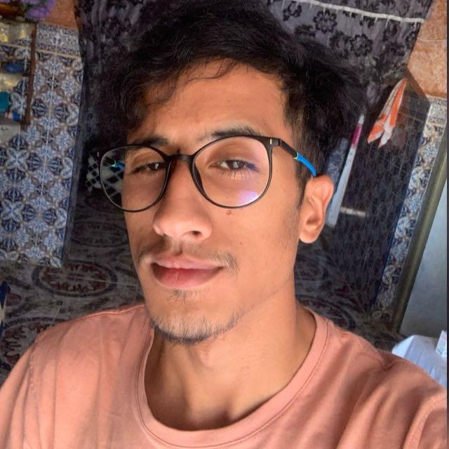

Anass Azouz
Summary
Aspiring full-stack web developer passionate about building dynamic and user-friendly web applications.
Education
- BAC Scientifique Option Sciences de la Vie et de la Terre - Lycée Zerktouni, Jerada (2021)
Work Experience
-
Conseiller Clientèle - Marwa, Marjane Oujda
Août 2024
-
Gestionnaires de Stocks - Пятёрочка, Voronezh Russia
March - June 2022
Skills
- Blender - 3D Art
- Photoshop, Illustrator, InDesign
Certifications
-
Inforgraphie - Twins Center
April - July 2024
Languages
- Arabic - Native language
- English - Fluent
- French - Medium
- Russian - Fluent